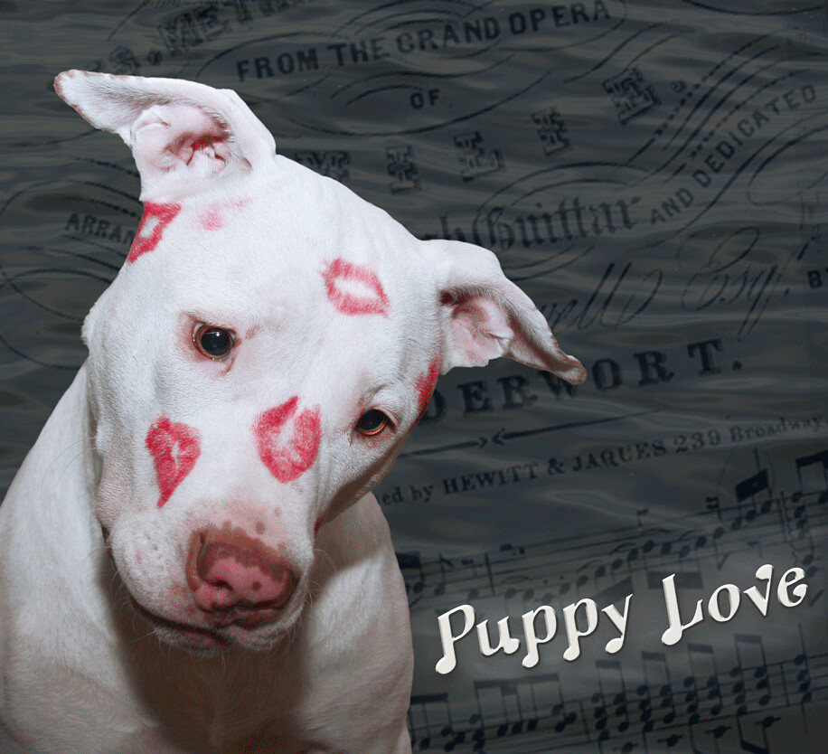

【2026年】ペット5匹 誕生日 プレゼントに喜ばれるプレゼント5選｜猫と犬の仲間別おすすめ

ペットの誕生日は、飼い主とペットの絆を深める特別な日です。ペットの好みや年齢を考慮したプレゼントを選ぶことで、ペットの喜びを倍増させることができます。
ここでは、猫と犬の両方に喜ばれるプレゼント5選を紹介します。ペットの誕生日をより特別な日にするためのアイデアを探している方におすすめです。
ペットの誕生日プレゼントの選び方
ペットの誕生日プレゼントを選ぶ際には、ペットの種類や年齢、好みを考慮する必要があります。例えば、猫は玩具やインタラクティブなアイテムが好きですが、犬はおやつやアウトドア関連のアイテムが好きです。
また、ペットの年齢や健康状態も考慮する必要があります。高齢のペットには、楽しくて安全なプレゼントを選ぶことが重要です。


猫に喜ばれるプレゼント
猫は独立心が強いですが、愛情を求める側面もあります。猫に喜ばれるプレゼントには、猫草やキャットニップ入りの玩具、インタラクティブなアイテムなどがあります。
猫は視覚的な刺激を好むため、色鮮やかな玩具や、動くものを追うことができるアイテムが好きです。
犬に喜ばれるプレゼント
犬は社交的な動物で、飼い主との交流を好みます。犬に喜ばれるプレゼントには、おやつやアウトドア関連のアイテム、インタラクティブな玩具などがあります。
犬は嗅覚が発達しているため、においが出るおやつや玩具が好きです。
ペットの誕生日をより特別な日にするためのアイデア
ペットの誕生日をより特別な日にするためのアイデアには、写真撮影やビデオ制作、特別な食事の準備などがあります。
ペットの好みや年齢を考慮したプレゼントを選ぶことで、ペットの喜びを倍増させることができます。
Okuriteでは、贈る相手やシーンに合わせて
ぴったりのギフトを簡単に探せます。
まとめ
ペットの誕生日は、飼い主とペットの絆を深める特別な日です。ペットの好みや年齢を考慮したプレゼントを選ぶことで、ペットの喜びを倍増させることができます。
ペットの誕生日をより特別な日にするためのアイデアを探している方におすすめです。ペットの好みに合ったプレゼントを選ぶことで、ペットの健康と幸せを維持することができます。